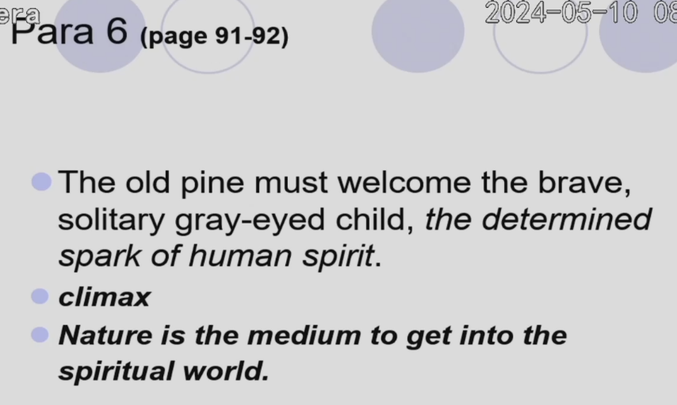

5.A White Heron¶
课本页数: 84 作者: Sarah Orne Jewett
曾经的考题¶
A white heron 会考察小说情节（p80 第三段第二行，在elements of fiction部分）
男人对女孩提到的的 white heron 感到很有兴趣这个情节属于起因经过高潮结局的哪个部分
应该是起因阶段
【往届考过的大题】
第 1 小题：结合本篇分析一下浪漫主义的特点，小说是怎么体现浪漫主义特色的（这个特点书上 p163 有，ppt 上也有，稍微有点不同，都建议背一下）
Despite the general usage of the term, a precise characterization and specific definition of Romanticism has been the subject of debate in the fields of literary history. But for the sake of a basic understanding, the following list can serve as a brief summary of its characteristics. A Romantic writer generally-
1 regards literary work mainly as an expression of its author's feelings and attitudes;
2 puts emphasis on imagination, emotion and introspection(内省)；
3 elevates sensibility and spontaneity over logic and reason;
4 believes in the healing power of nature;
5 shows an inclination towards things exotic, mythic and primitive.
展示了对异国情调、神话和原始事物的倾向。 第 2 小题：女孩最终保护了 white heron，请问她是否是一个自然主义者（或者说他是否是一个爱护环境的人）并说出原因。
是的，到时候乱写吧，就说她享受到了来自自然的幸福 第 3 小题：女孩爬上那颗巨大的松树后的情节是小说的高潮，需要复述一下她的心理上的转变以及登上树后看到的景色是怎样的，主要考描写（重点看一下书 p92 页）。
7 Sylvia’s face was like a pale star, if one had seen it from the ground, when the last thorny bough was past, and she stood trembling and tired but wholly triumphant, high in the tree-top. Yes, there was the sea with the dawning sun making a golden dazzle over it, and toward that glorious east flew two hawks with slow-moving pinions. How low they looked in the air from that height when one had only seen them before far up, and dark against the blue sky. Their gray feathers were as soft as moths; they seemed only a little way from the tree, and Sylvia felt as if she too could go flying away among the clouds. Westward, the woodlands and farms reached miles and miles into the distance; here and there were church steeples, and white villages, truly it was a vast and awesome world.
8 The birds sang louder and louder. At last the sun came up bewilderingly bright. Sylvia could see the white sails of ships out at sea, and the clouds that were purple and rose-colored and yellow at first began to fade away. Where was the white heron’s nest in the sea of green branches, and was this wonderful sight and pageant of the world the only reward for having climbed to such a giddy height? Now look down again, Sylvia, where the green marsh is set among the shining birches and dark hemlocks; there where you saw the white heron once you will see him again; look, look! a white spot of him like a single floating feather comes up from the dead hemlock and grows larger, and rises, and comes close at last, and goes by the landmark pine with steady sweep of wing and outstretched slender neck and crested head. And wait! wait! do not move a foot or a finger, little girl, do not send an arrow of light and consciousness from your two eager eyes, for the heron has perched on a pine bough not far beyond yours, and cries back to his mate on the nest and plumes his feathers for the new day!

第 4 小题：叙述一下本篇小说的两条故事线是什么，哪个更重要（这个问题的答案就在书p80 页最后一段）
A short story may have more than one plot-lines. In Sarah Orne Jewett's"A White Heron," there is the main plot line of Sylvia's protection of the bird, and there is another of her mental growth. Not all the plots in one piece of literary writing are of the same importance and usually there is a main plot line and one or a few subplots.
一个短篇故事可能有多条情节线。在莎拉·奥恩·朱厄特的《白鹭》中，有西尔维亚保护鸟类的主情节线，还有她心智成长的另一条情节线。一部文学作品中的所有情节并不都是同样重要的，通常有一条主情节线和一条或几条次要情节线。
显然她保护保护鸟类的主情节线更重要
正文¶
1 The woods were already filled with shadows one June evening, just before eight o’clock, though a bright sunset still glimmered faintly among the trunks of the trees. A little girl was driving home her cow, a plodding, dilatory, provoking creature in her behavior, but a valued companion for all that. They were going away from whatever light there was, and striking deep into the woods, but their feet were familiar with the path, and it was no matter whether their eyes could see it or not.
2 There was hardly a night the summer through when the old cow could be found waiting at the pasture bars; on the contrary, it was her greatest pleasure to hide herself away among the huckleberry bushes, and though she wore a loud bell she had made the discovery that if one stood perfectly still it would not ring. So Sylvia had to hunt for her until she found her, and call Co’ ! Co’ ! with never an answering Moo, until her childish patience was quite spent. If the creature had not given good milk and plenty of it, the case would have seemed very different to her owners. Besides, Sylvia had all the time there was, and very little use to make of it. Sometimes in pleasant weather it was a consolation to look upon the cow’s pranks as an intelligent attempt to play hide and seek, and as the child had no playmates she lent herself to this amusement with a good deal of zest. Though this chase had been so long that the wary animal herself had given an unusual signal of her whereabouts, Sylvia had only laughed when she came upon Mistress Moolly at the swamp-side, and urged her affectionately homeward with a twig of birch leaves. The old cow was not inclined to wander farther, she even turned in the right direction for once as they left the pasture, and stepped along the road at a good pace. She was quite ready to be milked now, and seldom stopped to browse. Sylvia wondered what her grandmother would say because they were so late. It was a great while since she had left home at half-past five o’clock, but everybody knew the difficulty of making this errand a short one. Mrs. Tilley had chased the hornéd torment too many summer evenings herself to blame any one else for lingering, and was only thankful as she waited that she had Sylvia, nowadays, to give such valuable assistance. The good woman suspected that Sylvia loitered occasionally on her own account; there never was such a child for straying about out-of-doors since the world was made! Everybody said that it was a good change for a little maid who had tried to grow for eight years in a crowded manufacturing town, but, as for Sylvia herself, it seemed as if she never had been alive at all before she came to live at the farm. She thought often with wistful compassion of a wretched geranium that belonged to a town neighbor. “


3 ‘Afraid of folks,'” old Mrs. Tilley said to herself, with a smile, after she had made the unlikely choice of Sylvia from her daughter’s houseful of children, and was returning to the farm. “‘Afraid of folks,’ they said! I guess she won’t be troubled no great with ’em up to the old place!” When they reached the door of the lonely house and stopped to unlock it, and the cat came to purr loudly, and rub against them, a deserted pussy, indeed, but fat with young robins, Sylvia whispered that this was a beautiful place to live in, and she never should wish to go home.

4 The companions followed the shady wood-road, the cow taking slow steps and the child very fast ones. The cow stopped long at the brook to drink, as if the pasture were not half a swamp, and Sylvia stood still and waited, letting her bare feet cool themselves in the shoal water, while the great twilight moths struck softly against her. She waded on through the brook as the cow moved away, and listened to the thrushes with a heart that beat fast with pleasure. There was a stirring in the great boughs overhead. They were full of little birds and beasts that seemed to be wide awake, and going about their world, or else saying good-night to each other in sleepy twitters. Sylvia herself felt sleepy as she walked along. However, it was not much farther to the house, and the air was soft and sweet. She was not often in the woods so late as this, and it made her feel as if she were a part of the gray shadows and the moving leaves. She was just thinking how long it seemed since she first came to the farm a year ago, and wondering if everything went on in the noisy town just the same as when she was there, the thought of the great red-faced boy who used to chase and frighten her made her hurry along the path to escape from the shadow of the trees.

5 Suddenly this little woods-girl is horror-stricken to hear a clear whistle not very far away. Not a bird’s-whistle, which would have a sort of friendliness, but a boy’s whistle, determined, and somewhat aggressive. Sylvia left the cow to whatever sad fate might await her, and stepped discreetly aside into the bushes, but she was just too late. The enemy had discovered her, and called out in a very cheerful and persuasive tone, “Halloa, little girl, how far is it to the road?” and trembling Sylvia answered almost inaudibly, “A good ways.”

6 She did not dare to look boldly at the tall young man, who carried a gun over his shoulder, but she came out of her bush and again followed the cow, while he walked alongside.
7 “I have been hunting for some birds,” the stranger said kindly, “and I have lost my way, and need a friend very much. Don’t be afraid,” he added gallantly. “Speak up and tell me what your name is, and whether you think I can spend the night at your house, and go out gunning early in the morning.”
8 Sylvia was more alarmed than before. Would not her grandmother consider her much to blame? But who could have foreseen such an accident as this? It did not seem to be her fault, and she hung her head as if the stem of it were broken, but managed to answer “Sylvy,” with much effort when her companion again asked her name.

9 Mrs. Tilley was standing in the doorway when the trio came into view. The cow gave a loud moo by way of explanation.
10 “Yes, you’d better speak up for yourself, you old trial! Where’d she tucked herself away this time, Sylvy?” But Sylvia kept an awed silence; she knew by instinct that her grandmother did not comprehend the gravity of the situation. She must be mistaking the stranger for one of the farmer-lads of the region.
11 The young man stood his gun beside the door, and dropped a lumpy game-bag beside it; then he bade Mrs. Tilley good-evening, and repeated his wayfarer’s story, and asked if he could have a night’s lodging.
12 “Put me anywhere you like,” he said. “I must be off early in the morning, before day; but I am very hungry, indeed. You can give me some milk at any rate, that’s plain.”

13 “Dear sakes, yes,” responded the hostess, whose long slumbering hospitality seemed to be easily awakened. “You might fare better if you went out to the main road a mile or so, but you’re welcome to what we’ve got. I’ll milk right off, and you make yourself at home. You can sleep on husks or feathers,” she proffered graciously. “I raised them all myself. There’s good pasturing for geese just below here towards the ma’sh. Now step round and set a plate for the gentleman, Sylvy!” And Sylvia promptly stepped. She was glad to have something to do, and she was hungry herself.
14 It was a surprise to find so clean and comfortable a little dwelling in this New England wilderness. The young man had known the horrors of its most primitive housekeeping, and the dreary squalor of that level of society which does not rebel at the companionship of hens. This was the best thrift of an old-fashioned farmstead, though on such a small scale that it seemed like a hermitage. He listened eagerly to the old woman’s quaint talk, he watched Sylvia’s pale face and shining gray eyes with ever growing enthusiasm, and insisted that this was the best supper he had eaten for a month, and afterward the new-made friends sat down in the door-way together while the moon came up.

15 Soon it would be berry-time, and Sylvia was a great help at picking. The cow was a good milker, though a plaguy thing to keep track of, the hostess gossiped frankly, adding presently that she had buried four children, so Sylvia’s mother, and a son (who might be dead) in California were all the children she had left. “Dan, my boy, was a great hand to go gunning,” she explained sadly. “I never wanted for pa’tridges or gray squer’ls while he was to home. He’s been a great wand’rer, I expect, and he’s no hand to write letters. There, I don’t blame him, I’d ha’ seen the world myself if it had been so I could.
16 “Sylvy takes after him,” the grandmother continued affectionately, after a minute’s pause. “There ain’t a foot o’ ground she don’t know her way over, and the wild creaturs counts her one o’ themselves. Squer’ls she’ll tame to come an’ feed right out o’ her hands, and all sorts o’ birds. Last winter she got the jay-birds to bangeing here, and I believe she’d ‘a’ scanted herself of her own meals to have plenty to throw out amongst ’em, if I hadn’t kep’ watch. Anything but crows, I tell her, I’m willin’ to help support — though Dan he had a tamed one o’ them that did seem to have reason same as folks. It was round here a good spell after he went away. Dan an’ his father they didn’t hitch, — but he never held up his head ag’in after Dan had dared him an’ gone off.”

17 The guest did not notice this hint of family sorrows in his eager interest in something else.
18 “So Sylvy knows all about birds, does she?” he exclaimed, as he looked round at the little girl who sat, very demure but increasingly sleepy, in the moonlight. “I am making a collection of birds myself. I have been at it ever since I was a boy.” (Mrs. Tilley smiled.) “There are two or three very rare ones I have been hunting for these five years. I mean to get them on my own ground if they can be found.”

19 “Do you cage ’em up?” asked Mrs. Tilley doubtfully, in response to this enthusiastic announcement.
20 “Oh no, they’re stuffed and preserved, dozens and dozens of them,” said the ornithologist, “and I have shot or snared every one myself. I caught a glimpse of a white heron a few miles from here on Saturday, and I have followed it in this direction. They have never been found in this district at all. The little white heron, it is,” and he turned again to look at Sylvia with the hope of discovering that the rare bird was one of her acquaintances.

21 But Sylvia was watching a hop-toad in the narrow footpath.
22 “You would know the heron if you saw it,” the stranger continued eagerly. “A queer tall white bird with soft feathers and long thin legs. And it would have a nest perhaps in the top of a high tree, made of sticks, something like a hawk’s nest.”
23 Sylvia’s heart gave a wild beat; she knew that strange white bird, and had once stolen softly near where it stood in some bright green swamp grass, away over at the other side of the woods. There was an open place where the sunshine always seemed strangely yellow and hot, where tall, nodding rushes grew, and her grandmother had warned her that she might sink in the soft black mud underneath and never be heard of more. Not far beyond were the salt marshes just this side the sea itself, which Sylvia wondered and dreamed much about, but never had seen, whose great voice could sometimes be heard above the noise of the woods on stormy nights.

24 “I can’t think of anything I should like so much as to find that heron’s nest,” the handsome stranger was saying. “I would give ten dollars to anybody who could show it to me,” he added desperately, “and I mean to spend my whole vacation hunting for it if need be. Perhaps it was only migrating, or had been chased out of its own region by some bird of prey.”
25 Mrs. Tilley gave amazed attention to all this, but Sylvia still watched the toad, not divining, as she might have done at some calmer time, that the creature wished to get to its hole under the door-step, and was much hindered by the unusual spectators at that hour of the evening. No amount of thought, that night, could decide how many wished-for treasures the ten dollars, so lightly spoken of, would buy.

26 The next day the young sportsman hovered about the woods, and Sylvia kept him company, having lost her first fear of the friendly lad, who proved to be most kind and sympathetic. He told her many things about the birds and what they knew and where they lived and what they did with themselves. And he gave her a jack-knife, which she thought as great a treasure as if she were a desert-islander. All day long he did not once make her troubled or afraid except when he brought down some unsuspecting singing creature from its bough. Sylvia would have liked him vastly better without his gun; she could not understand why he killed the very birds he seemed to like so much. But as the day waned, Sylvia still watched the young man with loving admiration. She had never seen anybody so charming and delightful; the woman’s heart, asleep in the child, was vaguely thrilled by a dream of love. Some premonition of that great power stirred and swayed these young creatures who traversed the solemn woodlands with soft-footed silent care. They stopped to listen to a bird’s song; they pressed forward again eagerly, parting the branches — speaking to each other rarely and in whispers; the young man going first and Sylvia following, fascinated, a few steps behind, with her gray eyes dark with excitement.

27 She grieved because the longed-for white heron was elusive, but she did not lead the guest, she only followed, and there was no such thing as speaking first. The sound of her own unquestioned voice would have terrified her — it was hard enough to answer yes or no when there was need of that. At last evening began to fall, and they drove the cow home together, and Sylvia smiled with pleasure when they came to the place where she heard the whistle and was afraid only the night before.

II.
1 Half a mile from home, at the farther edge of the woods, where the land was highest, a great pine-tree stood, the last of its generation. Whether it was left for a boundary mark, or for what reason, no one could say; the woodchoppers who had felled its mates were dead and gone long ago, and a whole forest of sturdy trees, pines and oaks and maples, had grown again. But the stately head of this old pine towered above them all and made a landmark for sea and shore miles and miles away. Sylvia knew it well. She had always believed that whoever climbed to the top of it could see the ocean; and the little girl had often laid her hand on the great rough trunk and looked up wistfully at those dark boughs that the wind always stirred, no matter how hot and still the air might be below. Now she thought of the tree with a new excitement, for why, if one climbed it at break of day, could not one see all the world, and easily discover from whence the white heron flew, and mark the place, and find the hidden nest?

2 What a spirit of adventure, what wild ambition! What fancied triumph and delight and glory for the later morning when she could make known the secret! It was almost too real and too great for the childish heart to bear.

3 All night the door of the little house stood open and the whippoorwills came and sang upon the very step. The young sportsman and his old hostess were sound asleep, but Sylvia’s great design kept her broad awake and watching. She forgot to think of sleep. The short summer night seemed as long as the winter darkness, and at last when the whippoorwills ceased, and she was afraid the morning would after all come too soon, she stole out of the house and followed the pasture path through the woods, hastening toward the open ground beyond, listening with a sense of comfort and companionship to the drowsy twitter of a half-awakened bird, whose perch she had jarred in passing. Alas, if the great wave of human interest which flooded for the first time this dull little life should sweep away the satisfactions of an existence heart to heart with nature and the dumb life of the forest!

4 There was the huge tree asleep yet in the paling moonlight, and small and silly Sylvia began with utmost bravery to mount to the top of it, with tingling, eager blood coursing the channels of her whole frame, with her bare feet and fingers, that pinched and held like bird’s claws to the monstrous ladder reaching up, up, almost to the sky itself. First she must mount the white oak tree that grew alongside, where she was almost lost among the dark branches and the green leaves heavy and wet with dew; a bird fluttered off its nest, and a red squirrel ran to and fro and scolded pettishly at the harmless housebreaker. Sylvia felt her way easily. She had often climbed there, and knew that higher still one of the oak’s upper branches chafed against the pine trunk, just where its lower boughs were set close together. There, when she made the dangerous pass from one tree to the other, the great enterprise would really begin.
5 She crept out along the swaying oak limb at last, and took the daring step across into the old pine-tree. The way was harder than she thought; she must reach far and hold fast, the sharp dry twigs caught and held her and scratched her like angry talons, the pitch made her thin little fingers clumsy and stiff as she went round and round the tree’s great stem, higher and higher upward. The sparrows and robins in the woods below were beginning to wake and twitter to the dawn, yet it seemed much lighter there aloft in the pine-tree, and the child knew she must hurry if her project were to be of any use.

6 The tree seemed to lengthen itself out as she went up, and to reach farther and farther upward. It was like a great main-mast to the voyaging earth; it must truly have been amazed that morning through all its ponderous frame as it felt this determined spark of human spirit wending its way from higher branch to branch. Who knows how steadily the least twigs held themselves to advantage this light, weak creature on her way! The old pine must have loved his new dependent. More than all the hawks, and bats, and moths, and even the sweet-voiced thrushes, was the brave, beating heart of the solitary gray-eyed child. And the tree stood still and frowned away the winds that June morning while the dawn grew bright in the east.
7 Sylvia’s face was like a pale star, if one had seen it from the ground, when the last thorny bough was past, and she stood trembling and tired but wholly triumphant, high in the tree-top. Yes, there was the sea with the dawning sun making a golden dazzle over it, and toward that glorious east flew two hawks with slow-moving pinions. How low they looked in the air from that height when one had only seen them before far up, and dark against the blue sky. Their gray feathers were as soft as moths; they seemed only a little way from the tree, and Sylvia felt as if she too could go flying away among the clouds. Westward, the woodlands and farms reached miles and miles into the distance; here and there were church steeples, and white villages, truly it was a vast and awesome world.
8 The birds sang louder and louder. At last the sun came up bewilderingly bright. Sylvia could see the white sails of ships out at sea, and the clouds that were purple and rose-colored and yellow at first began to fade away. Where was the white heron’s nest in the sea of green branches, and was this wonderful sight and pageant of the world the only reward for having climbed to such a giddy height? Now look down again, Sylvia, where the green marsh is set among the shining birches and dark hemlocks; there where you saw the white heron once you will see him again; look, look! a white spot of him like a single floating feather comes up from the dead hemlock and grows larger, and rises, and comes close at last, and goes by the landmark pine with steady sweep of wing and outstretched slender neck and crested head. And wait! wait! do not move a foot or a finger, little girl, do not send an arrow of light and consciousness from your two eager eyes, for the heron has perched on a pine bough not far beyond yours, and cries back to his mate on the nest and plumes his feathers for the new day!
9 The child gives a long sigh a minute later when a company of shouting cat-birds comes also to the tree, and vexed by their fluttering and lawlessness the solemn heron goes away. She knows his secret now, the wild, light, slender bird that floats and wavers, and goes back like an arrow presently to his home in the green world beneath. Then Sylvia, well satisfied, makes her perilous way down again, not daring to look far below the branch she stands on, ready to cry sometimes because her fingers ache and her lamed feet slip. Wondering over and over again what the stranger would say to her, and what he would think when she told him how to find his way straight to the heron’s nest.

10 “Sylvy, Sylvy!” called the busy old grandmother again and again, but nobody answered, and the small husk bed was empty and Sylvia had disappeared.

11 The guest waked from a dream, and remembering his day’s pleasure hurried to dress himself that it might sooner begin. He was sure from the way the shy little girl looked once or twice yesterday that she had at least seen the white heron, and now she must really be made to tell. Here she comes now, paler than ever, and her worn old frock is torn and tattered, and smeared with pine pitch. The grandmother and the sportsman stand in the door together and question her, and the splendid moment has come to speak of the dead hemlock-tree by the green marsh.

12 But Sylvia does not speak after all, though the old grandmother fretfully rebukes her, and the young man’s kind, appealing eyes are looking straight in her own. He can make them rich with money; he has promised it, and they are poor now. He is so well worth making happy, and he waits to hear the story she can tell.

13 No, she must keep silence! What is it that suddenly forbids her and makes her dumb? Has she been nine years growing and now, when the great world for the first time puts out a hand to her, must she thrust it aside for a bird’s sake? The murmur of the pine’s green branches is in her ears, she remembers how the white heron came flying through the golden air and how they watched the sea and the morning together, and Sylvia cannot speak; she cannot tell the heron’s secret and give its life away.

14 Dear loyalty, that suffered a sharp pang as the guest went away disappointed later in the day, that could have served and followed him and loved him as a dog loves! Many a night Sylvia heard the echo of his whistle haunting the pasture path as she came home with the loitering cow. She forgot even her sorrow at the sharp report of his gun and the sight of thrushes and sparrows dropping silent to the ground, their songs hushed and their pretty feathers stained and wet with blood. Were the birds better friends than their hunter might have been, — who can tell? Whatever treasures were lost to her, woodlands and summer-time, remember! Bring your gifts and graces and tell your secrets to this lonely country child!

原文对照翻译版¶


Discussion Tips¶
"A White Heron"(1886) has remained one of the best-known short stories by Sarah Orne Jewett, and is frequently anthologized and draws much critical attention. In the story, the main character Sylvia is presented with a choice between the offer of ten dollars and companionship with a nice and handsome young man, and the locating and killing of a rare bird, whose hidden nesting place she knows. It is a difficult choice. She needs the money badly and yearns for companionship, but somehow, her instinct tells her that it is not right to help the eager hunter. Being a child who loves the woods and everything living in it, her heart warms towards the white heron. She makes her decision despite the promises of money and a companion she likes to have.
The short story ends with an ambiguous note with the girl still struggling mentally with her own decision, hoping that her sacrifice would be paid back by nature's rewards. Once she comes to live in the woods, she becomes symbolically the nature's child. The story is about a white heron as the title indicates, but it is more about the girl. The girl in turn personifies a choice between something she loves and something she needs. Jewett focuses on the girl's deep inward love of the nature, its unspoiled surroundings and nature's inhabitants. This love is spontaneous rather than rational, and finally prevails over the human possessive impulses.


上课的一些额外内容


yf的资料¶
A white Heron
"A White Heron" is a short story by Sarah Orne Jewett, first published in 1886. The story is often recognized as a classic example of local color or regional literature and is frequently included in American literature anthologies.
Plot Summary:
The story centers around a young girl named Sylvia, who lives with her grandmother in the rural countryside. Sylvia has a deep connection with nature and enjoys her simple, quiet life in the woods. One day, a young ornithologist, a bird hunter, comes to the area in search of a rare bird, the white heron. He stays with Sylvia and her grandmother, and Sylvia is fascinated by him.
The hunter offers a significant sum of money to anyone who can show him where to find the white heron. Sylvia knows where the bird can be found, as she has seen it in the forest. Torn between her desire to please the handsome young man and her love for the bird, Sylvia ultimately decides to protect the heron, choosing the beauty and sanctity of nature over monetary reward and human companionship.
Themes:
"A White Heron" explores several themes:
- Nature vs. Materialism: The story contrasts the purity and beauty of nature with human greed and materialism.
- Innocence and Experience: Sylvia's internal struggle represents the loss of innocence and the moral dilemmas that come with experience.
- Gender Roles: The story subtly critiques traditional gender roles, particularly through Sylvia's independence and her decision to resist pleasing the male hunter.
- Conservation and Ecology: The story can be read as an early work of environmental literature, highlighting the importance of protecting nature.
Literary Significance:
The story is notable for its vivid descriptions of the natural world and its focus on rural life. It reflects Jewett's own love of nature and her familiarity with the landscapes of New England. "A White Heron" is often discussed in the context of feminist literature and ecological criticism.
Sarah Orne Jewett, through this story, left a lasting impact on American literature, particularly in the area of local color writing and as a precursor to later ecological writing.